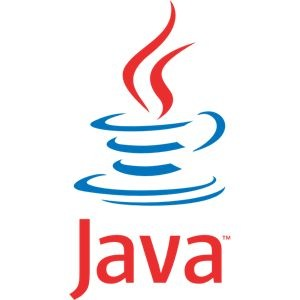

Track Suggester
As you know, Epicodus students must decide which track they would like to pursue before they enroll. While all languages have similarities, and switching between languages and platforms is very common in both internships and jobs, applicants should still choose the track they wish to complete with care.
This website is created to help you with this decision. We will asks you a series of questions about yourselve and then provide a track suggestion based on your answers.
Ruby/Rails

Ruby is a favorite language of developers building interactive web applications. If an app involves users creating accounts, entering information, and interacting with dynamic content, there's a good chance it is built with Ruby. Ruby became popular because the Rails framework, which is written with Ruby, simplified many of the common tasks associated with building web applications. It's most popular with startups and smaller companies who are looking to build their product quickly
Java/Android
Java is also a favorite of enterprise companies, but its appeal is broader as well: it's one of the most popular of all programming languages, and it's used in everything from for high-performance processing to building Android user interfaces. Because Java has been very popular for a very long time and is used in so many applications, it is also a very high-demand language. If you're interested in working for an enterprise-level company, as an Android developer, or in high-performance applications, Java could be a good language to learn.
C#

C# is most popular among bigger established businesses, often for building internal software. Because it's been around for a long time and has the backing of Microsoft, it is one of the most in-demand languages in the job market. C# has also been going through a bit of a rebirth lately, with Microsoft open sourcing the language and surrounding platform, porting it to run on Mac and Linux, and incorporating many of the best features of other languages. If you like the idea of working for a larger company on business software, C# is a great choice.